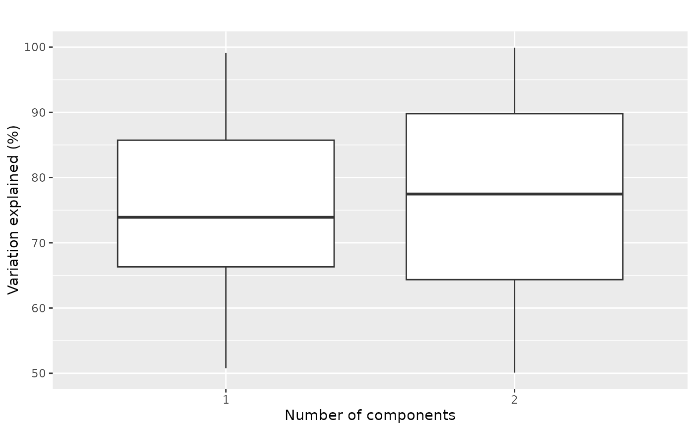
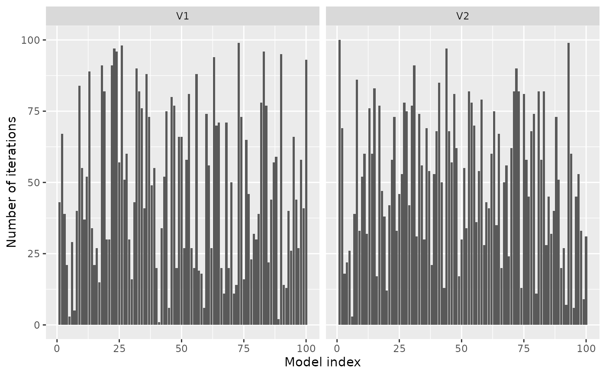
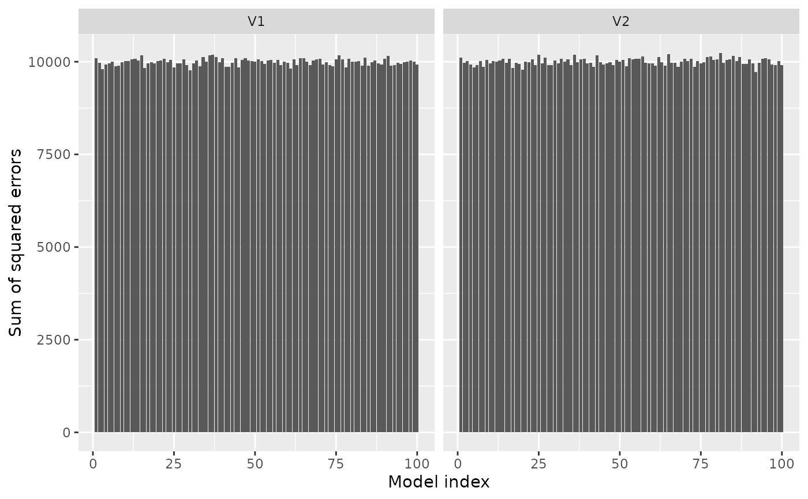
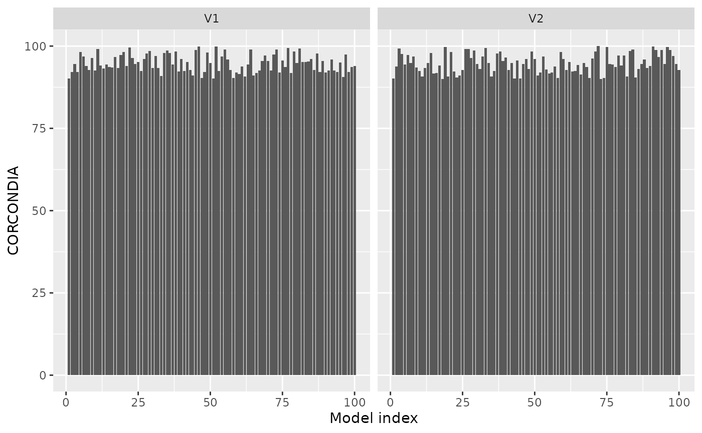
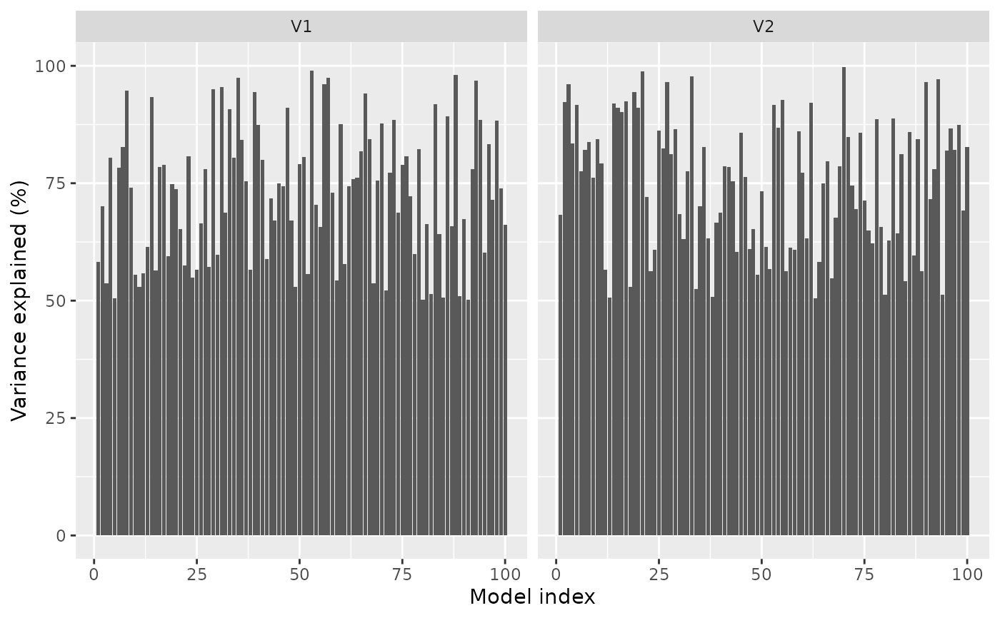

Plots diagnostics for selecting the number of components of a parafac model.
plotModelMetric.RdPlots diagnostics for selecting the number of components of a parafac model.
Arguments
- numIterations
Matrix of number of iterations needed per initialized model (number of models x number of components).
- SSE
Sum of squared errors of the initialized models (number of models x number of components).
- CORCONDIA
CORCONDIA scores of the initialized models (see corcondia) (number of models x number of components).
- varExp
Variation explained by the initialized models (number of models x number of components).
- TCC
Cube of Tucker Congruence Coefficients comparing the loadings between two components within a mode (mode x component x component x model).
Examples
numIterations = array(round(runif(100*2)*100), c(100, 2))
SSE = array(rnorm(100*2, mean=1e4, sd=100), c(100, 2))
CORCONDIA = array(runif(100*2, min=90, max=100), c(100,2))
varExp = array(runif(100*2, min=50, max=100), c(100,2))
TCC = list(NULL, array(rnorm(3*2*2*100), c(3,2,2,100)))
plots = plotModelMetric(numIterations, SSE, CORCONDIA, varExp, TCC)
plots$overview

plots$numIterations

plots$SSE

plots$CORCONDIA

plots$varExp
